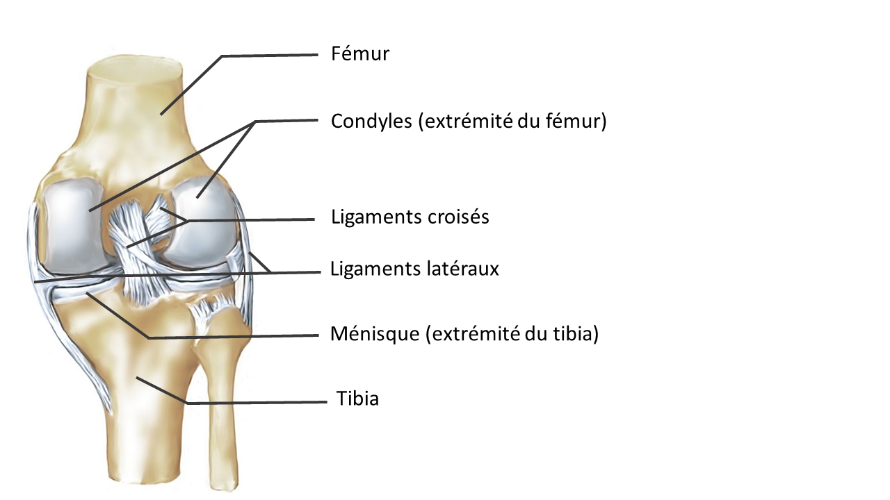
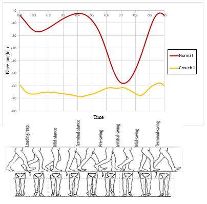

PROJECT
Knee Joint Modeling for Human Walk Simulation
ENSEIRB-MATMECA (Bordeaux INP) | Academic group project (TER) | 4 people | 2019–2020
 alt="Knee Joint Model">
alt="Knee Joint Model">
Project Overview
Follow-on to a prior full-body walking-simulation project by students from the precedent year, this time focused specifically on modeling the knee joint more realistically than a simple ball-and-socket approximation. Developed a mechanical model representing the femur-condyle contact as a cylinder-on-plane connection, with lateral and cruciate ligaments modeled as springs, capturing both the flexion motion and the associated rolling/sliding translation. Derived the equations of motion, built a finite-difference numerical scheme in FORTRAN 90, and compared the simulated flexion-angle trajectory against reference human-walk data, discussing where the simplified model diverges from real walk dynamics.

